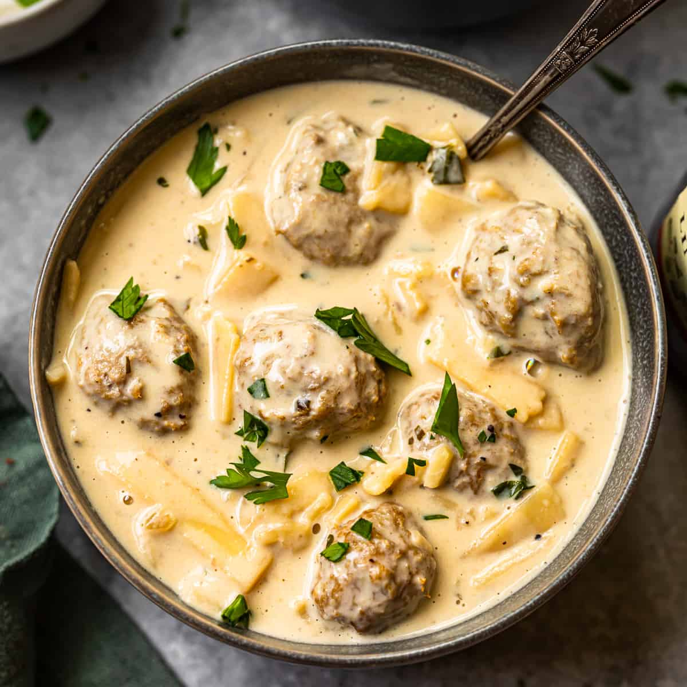

Authentic Sweedish Meatball Soup

This meatball soup is the most satisfying soup you will slurp all season!
Meatball Soup is only as good as the meatballs, and these Swedish meatballs are the best! This Meatball Soup is made with tender, juicy meatballs, hearty egg noodles, carrots, mushrooms and celery all swimming in luscious creamy brown gravy broth swirled with sour cream. It is hearty, satisfying and with one bite, it will be a beautifully delicious day!
Ingredients:
- Ground beef
- Ground turkey or veal
- Ricotta cheese
- Eggs
- Breadcrumbs
- Spices: salt and pepper, allspice, nutmeg
- Produce: fresh parsley. red onions, fresh dill
- Butter
- Flour
- Beef broth
- Pasta
- Sour cream
- Heavy cream
Steps:
- Preheat oven to 450 degrees. Lightly grease a 9x13 inch baking dish.
- Combined the meatball ingredients in a large bowl and mix thoroughly.
- Roll the mixture into walnut sized balls and place the meatballs in the prepared baking dish so that they are just touching. Bake for 20 minutes, or until the meatballs are firm and cooked through.
- Meanwhile in a large Dutch oven, cook onion in the butter until tender. Remove from pot and set aside.
- Stir flour, nutmeg and allspice into remaining butter in pot and cook for 1-2 minutes.
- Gradually whisk in broth. Cook and stir until thickened. Add the meatballs and bring to simmer.
- While meatballs simmer, cook the pasta according to package directions.
- Stir the cooked pasta into the pot, along with the sour cream, heavy cream and fresh parsley. Season with salt and pepper, to taste.
- Ladle soup into bowls and top with onions and fresh dill.